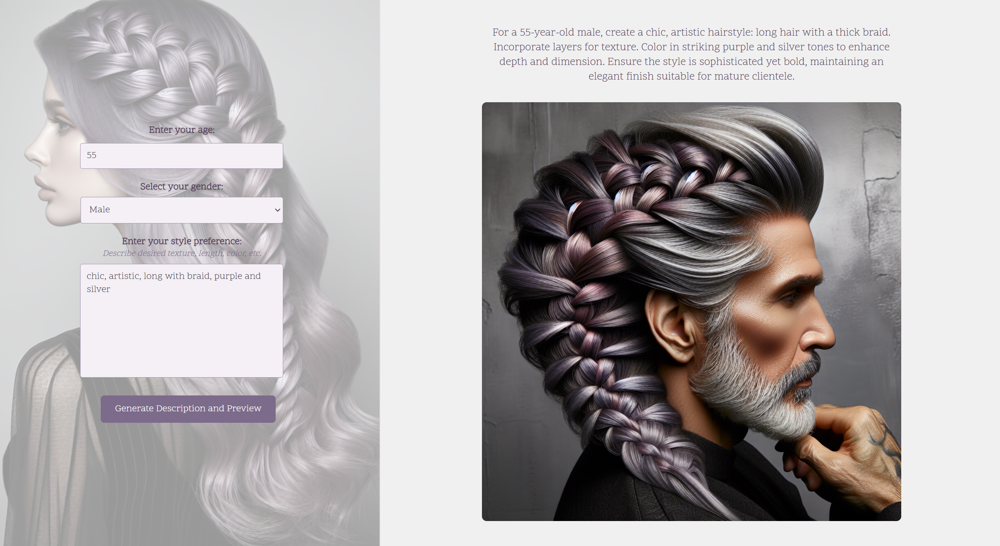
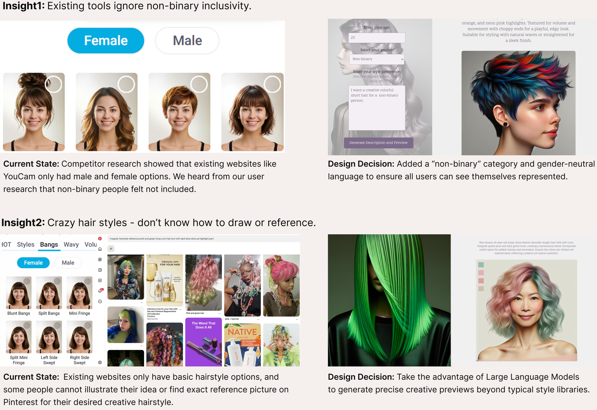
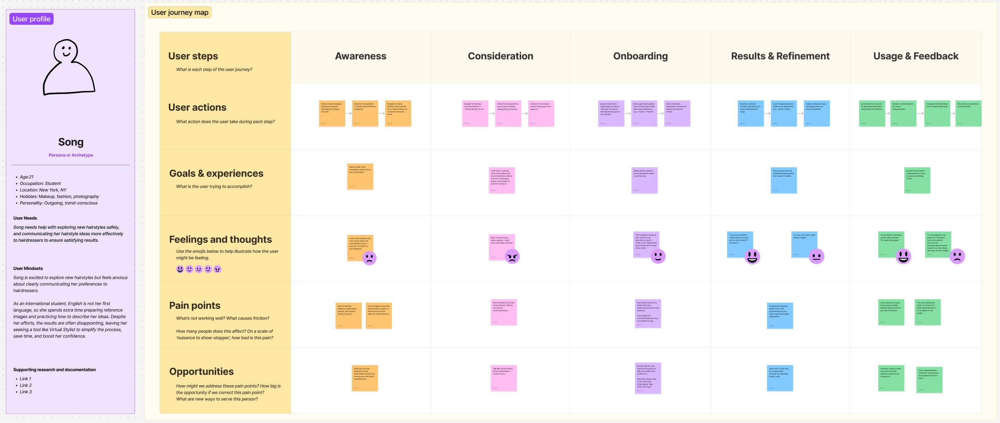
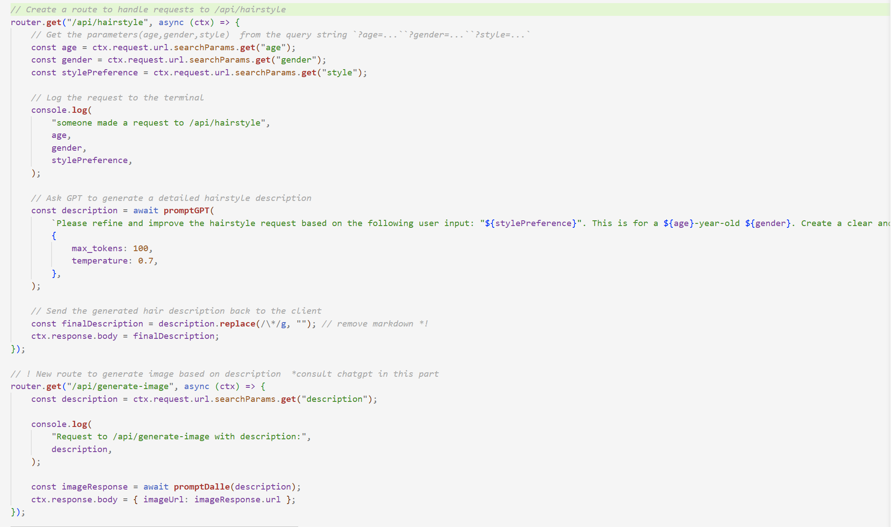
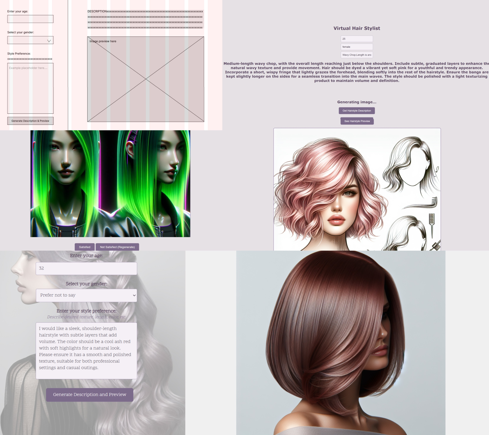

Virtual Stylist
UX & Web Development: AI-powered web application that allows underrepresented users (e.g., nonbinary folks) type in a hairstyle and get an AI-generated preview that allows them to visualize themselves in a way that existing apps do not.
Role: UX designer & Web developer (personal project)
Timeline: 4 weeks · 2024
Tech Stack & Tools: Figma; VS Code(HTML/CSS/JavaScript); OpenAI API for text (ChatGPT) and image generation (DALLE); Oak framework for the Deno backend; Google Fonts (Scope One) for typography; Canva for laptop mockup.

Problem & Objective
Existing AI styling apps rely on user photos, raising privacy and inclusivity concerns related to gender and ethnicity. Therefore, I aim to create a gender-inclusive, photo-free styling experience that lets users safely explore hairstyles without compromising identity or data privacy.
Inspiration / Social Context
The article Life as a Trans Bitmoji inspired my exploration of digital self-representation. It shows how a virtual avatar can help someone express identity shifts before they happen in real life. Similarly, anime fan art communities reveal the importance of visualization for people who rarely get to see themselves represented.
Solution
Built with HTML/CSS/JavaScript with OpenAI APIs to develop a photo-free system where users input key attributes (age, gender identity, style preferences) to receive:
1. Detailed, professional hairstyle descriptions
2. AI-generated image previews for visualization

Key Design Decisions:

Key Process Stages

Research: Created user personas and journey map based on interviews and competitor analysis (esp. YouCam), focusing on pain points around gender inclusivity and data privacy.

Coding & Prompting: Developed the app with HTML/CSS/JavaScript, Deno backend, and OpenAI APIs; Then Iterated prompts to improve output accuracy.

Prototyping & Testing: Built and tested wireframes in Figma and prototypes in browser; Enabled input rewriting and real-time regeneration for more flexible exploration.
Learnings:This process deepened my understanding of AI bias. During testing, I noticed the model often generated white, young female images, revealing dataset limitations. It pushed me to design with greater inclusivity, ensuring AI styling tools represent everyone more fairly and personally.
Reflections
Virtual Stylist challenged my assumption that removing photos alone would make AI styling tools more inclusive. While a photo-free workflow reduced privacy barriers, testing showed that inclusivity is shaped by many UX decisions, such as how gender options are framed, which defaults appear first, and how prompts influence the language model's result. Adding gender-neutral language and moving away from fixed hairstyle libraries helped increase flexibility, but also revealed that representation cannot be solved through a single feature.
Iterative testing exposed deeper limitations. Despite careful interface design, generated previews often defaulted toward narrow visual norms, reflecting biases embedded in training data rather than user intent. This project reshaped how I approach AI-powered UX design: not as the pursuit of seamless automation, but as a balance between user agency, system constraints, and ethical responsibility.